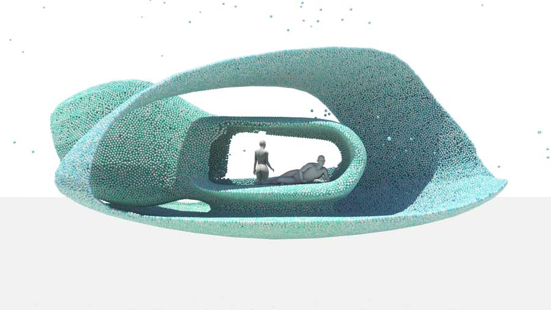
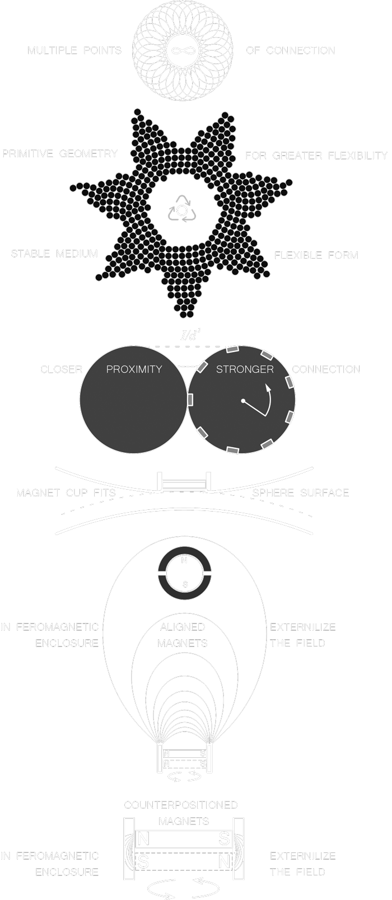
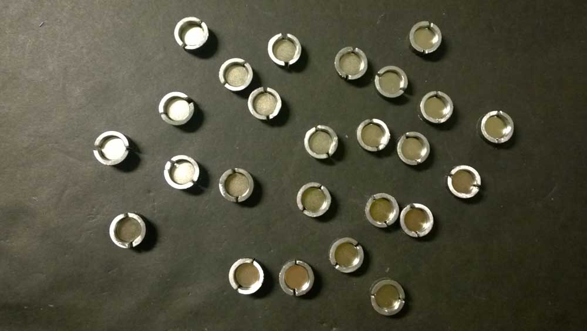
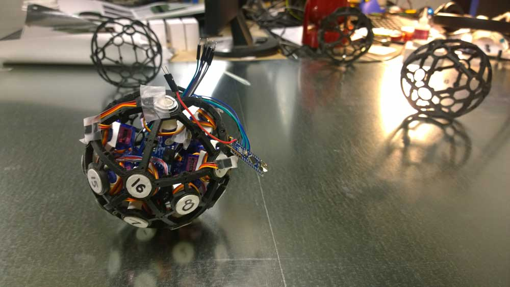
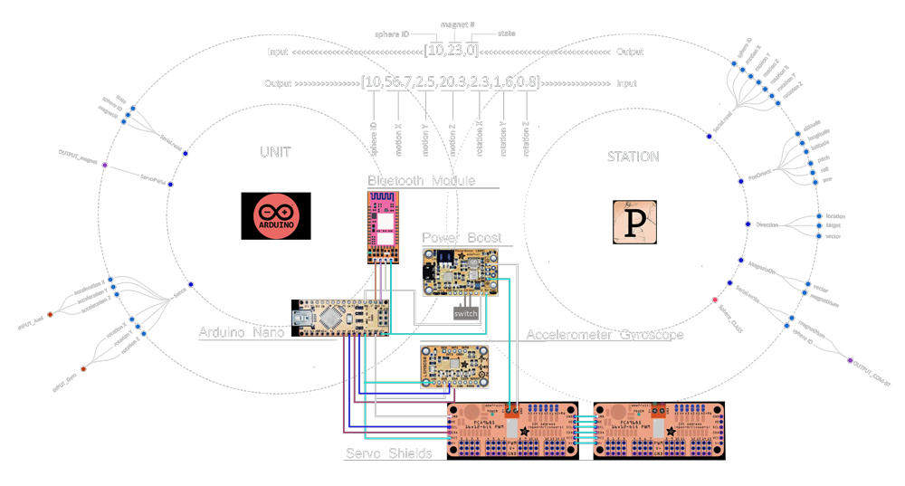
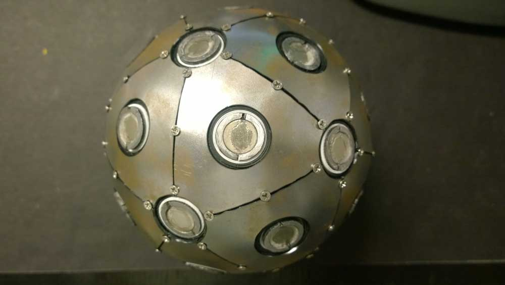
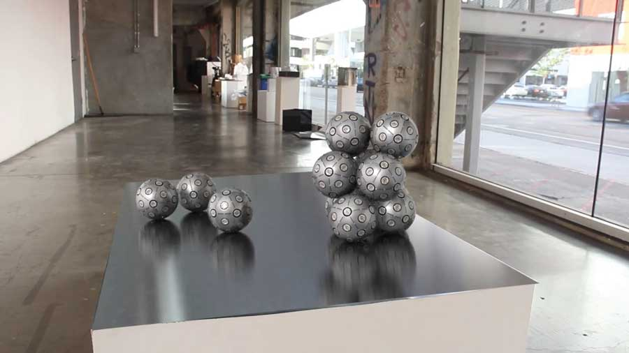

This project has been developed in two stages. The conceptual one where the problem of physical matter and architectural medium got addressed. And the physical one where the robotic prototype was developed. This project was my SCI-Arc thesis and layer out the professional endeavor of my professional agency.

A form consists of spherical units sticking together in a ambiguous mass.
Until this medium will become available to experiment in physical reality the speculative forms will only mimic the material we have experience with.
The architectural form is intentionally left blank. It has no form until the further development.
However it is not hard to imagine the dynamic and choreographic quality of an architectural space loosely formed by the spherical units.
The most vital way to develop a project focusing on material medium was to fabricate a prototype unit. The given example is a final iteration. The sphere is subdivided on triangles as dymaxion dome. To enable mounting inside parts sphere has demountable units.
The shell of the sphere is covered with 2mm steel sheet to have ferromagnetic surface. Holes in the frame is left for round magnets.
Magnets are placed in 4MM ferromagnetic enclosure to turn magnets on and off by a servo motor. A single sphere has 32 controllable magnets.
The geometry of a unit as chosen to provide irregular spatial grid. As for
regular spatial grid is know to be more fragile structurally. Sphere packing
doesn’t fit tightly however in case where the form consisted of spherical
units has to have a tight fit a flexible polymer membrane will seal the
space between the spheres. In the current stage I limited the effort to
the connection mechanism.
The attraction force is squared to the distance, so the magnets can only
secure the position of the unit in place but don’t fit to actuate is.
For actuation a rapid stop gyrator shall be used.
Ferro magnetic enclosures divided in two halves, one for each pole
Diagonally charged niodium magnets in ferromagnetic enclosure.
Dymaxion frame with magnet units and PCBs in place.
System architecture.
Assembled Unit.
Demonstration of a set of spherical units on metal sheet.